Khử thâm môi
Khử thâm môi là gì? Tất cả những điều bạn cần biết
Tìm hiểu quy trình, đối tượng phù hợp, thời gian hồi phục, chi phí, chăm sóc sau thực hiện và những câu hỏi thường gặp.
Đọc bài tư vấnMục kiến thức ELLY
Trang này được phục vụ nhằm nâng cao giá trị bổ sung cho khách hàng trong quá trình tư vấn và thực hiện dịch vụ làm đẹp tại ELLY.
Bài nổi bật
Tìm hiểu quy trình, đối tượng phù hợp, thời gian hồi phục, chi phí và cách chăm sóc sau khi khử thâm môi.
 Kiến thức làm đẹp
Kiến thức làm đẹp
Nhiều khách muốn môi tươi nhưng sợ màu quá đỏ, quá già hoặc nhìn như trang điểm đậm mỗi ngày.
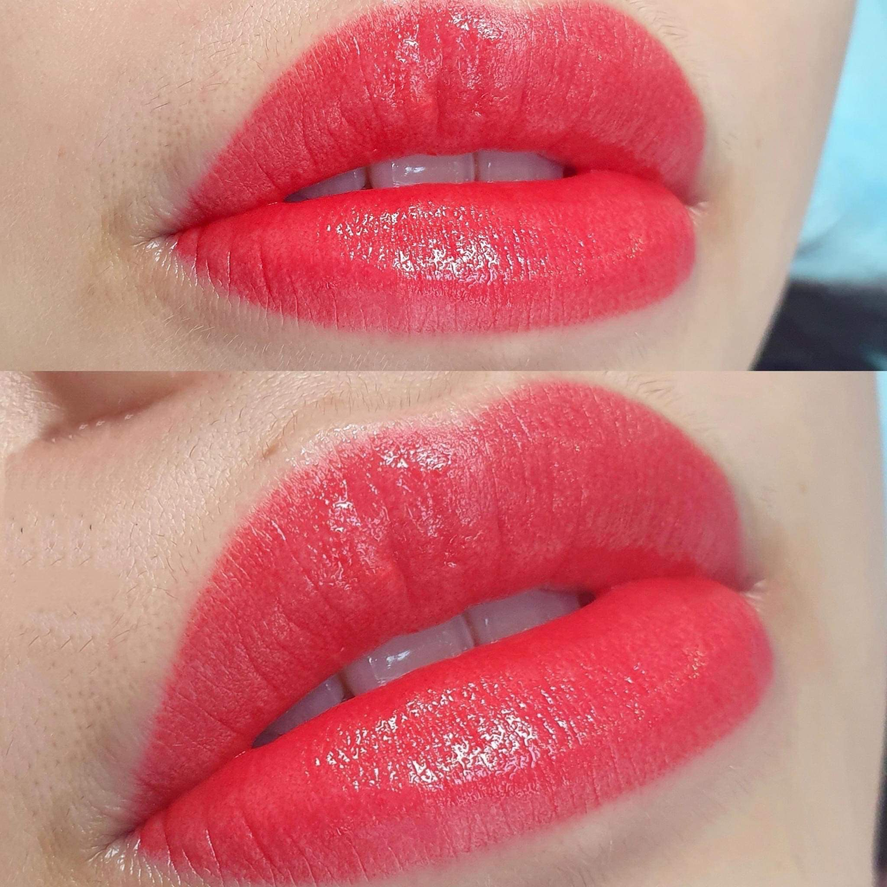
Kiến thức làm đẹpKhách muốn làm môi nhưng ngại đau, sợ sưng lâu hoặc không biết mấy ngày mới sinh hoạt bình thường.
 Kiến thức làm đẹp
Kiến thức làm đẹp
Làm môi xong mà chăm sóc sai có thể khiến môi khô, bong không đều hoặc màu lên kém tươi.
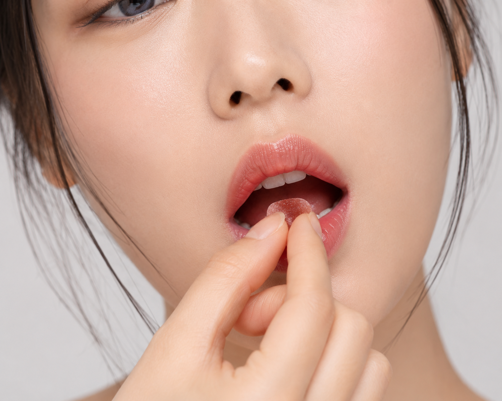
Kiến thức làm đẹpKhách thường rối vì nghe quá nhiều lời kiêng khác nhau, không biết ăn gì để môi hồi phục tốt.
Tìm hiểu quy trình, đối tượng phù hợp, thời gian hồi phục, chi phí, chăm sóc sau thực hiện và những câu hỏi thường gặp.
Đọc bài tư vấnGiải đáp chế độ ăn uống sau khi khử thâm môi, khi nào cần cẩn thận với hải sản và cách chăm sóc giúp môi hồi phục tự nhiên.
Đọc bài tư vấn
Giải đáp sau khử thâm môi uống cà phê, trà sữa, nước ngọt được không và nên uống gì để môi hồi phục tự nhiên.
Đọc bài tư vấn
Hướng dẫn sau khử thâm môi kiêng gì, nên ăn gì, uống cà phê được không và cách chăm sóc để môi hồi phục tự nhiên.
Đọc bài tư vấn
Giải đáp khử thâm môi có nguy hiểm không, yếu tố quyết định độ an toàn và cách chọn địa chỉ uy tín trước khi thực hiện.
Đọc bài tư vấn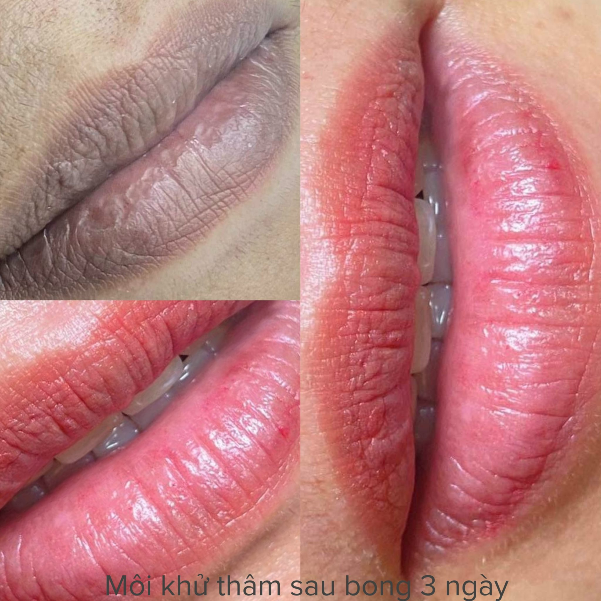
Tìm hiểu môi thâm bẩm sinh có khử được không, khi nào cần xử lý nền môi và cách chăm sóc để cải thiện sắc tố tự nhiên.
Đọc bài tư vấn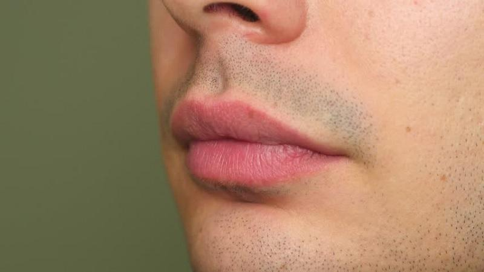
Giải đáp nguyên nhân môi nam giới bị thâm, chi phí, cảm giác khi làm, độ bền màu và cách chăm sóc sau khử thâm.
Đọc bài tư vấn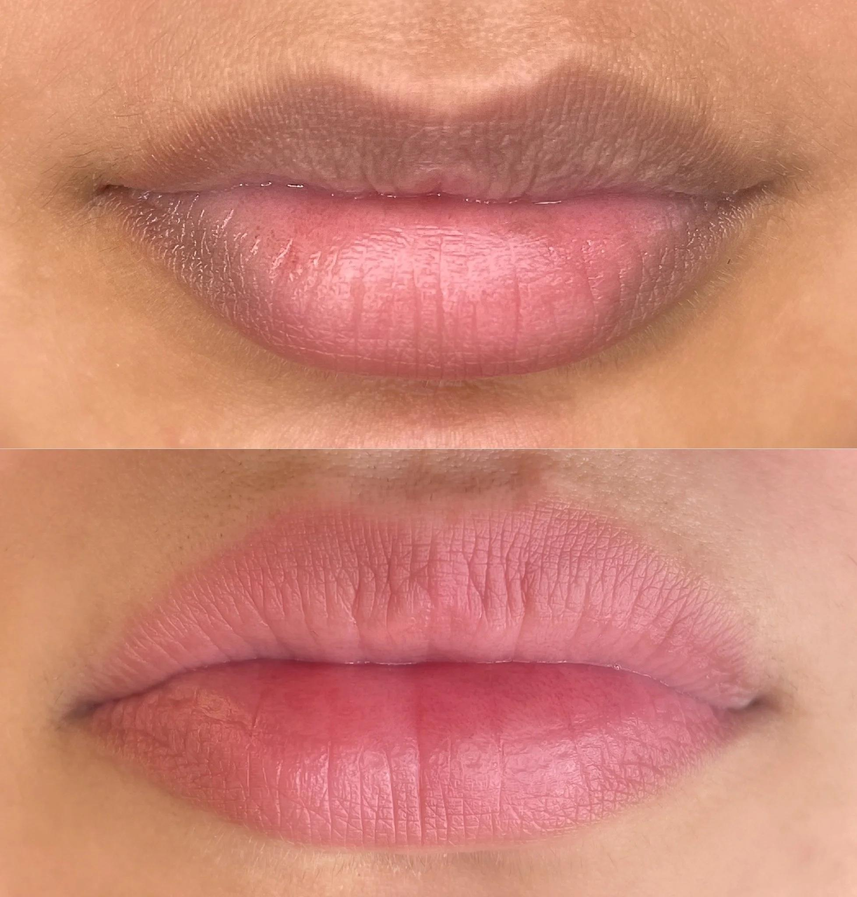
Tìm hiểu nguyên nhân môi thâm trở lại, cách chăm sóc môi sau khử thâm và thói quen giúp giữ môi hồng lâu hơn.
Đọc bài tư vấn
Theo dõi lộ trình hồi phục sau khử thâm môi, từ lúc môi vừa làm xong, bắt đầu bong đến khi màu môi dần ổn định tự nhiên.
Đọc bài tư vấn
Khám phá ưu điểm của màu nude, ai phù hợp, trường hợp nên cân nhắc và cách chăm sóc để môi lên màu tự nhiên.
Đọc bài tư vấn
Tổng hợp các màu phun môi đẹp, cách chọn theo tông da, độ tuổi và nền môi để màu lên tự nhiên, hài hòa hơn.
Đọc bài tư vấn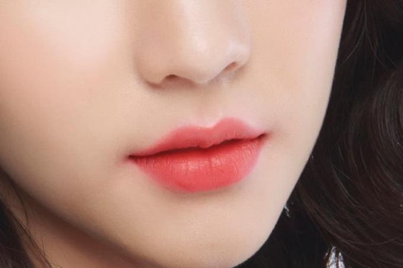
Tìm hiểu màu đỏ cam hợp với ai, ưu điểm của gam màu rạng rỡ này và cách chăm sóc để môi lên màu đẹp tự nhiên.
Đọc bài tư vấn
Khám phá màu hồng đất hợp với ai, ưu điểm của gam màu thanh lịch này và cách chăm sóc để môi lên màu tự nhiên.
Đọc bài tư vấn
Tìm hiểu màu đỏ nâu hợp với ai, ưu điểm của gam màu sang trọng này và cách chăm sóc để môi lên màu đẹp.
Đọc bài tư vấn
Giải đáp màu cam đào hợp với ai, ưu điểm của gam màu trẻ trung này và cách chăm sóc để môi lên màu tự nhiên.
Đọc bài tư vấn
Tìm hiểu màu hồng đào hợp với ai, ưu điểm của gam màu tự nhiên này và cách chăm sóc để môi lên màu hài hòa.
Đọc bài tư vấn
Giải đáp môi thâm có phun được không, khi nào cần xử lý nền và cách chọn màu môi giúp lên màu hài hòa tự nhiên.
Đọc bài tư vấn
Giải thích ưu điểm, điểm khác biệt, đối tượng phù hợp và cách chăm sóc sau phun môi Collagen.
Đọc bài tư vấnTìm hiểu khi nào môi đủ ổn định để dùng son, nên chọn loại son nào và cách giữ màu môi đẹp sau khi hồi phục.
Đọc bài tư vấn
Gợi ý những món nên kiêng, món nên bổ sung và các lưu ý chăm sóc để môi nhanh hồi phục, lên màu tự nhiên hơn.
Đọc bài tư vấn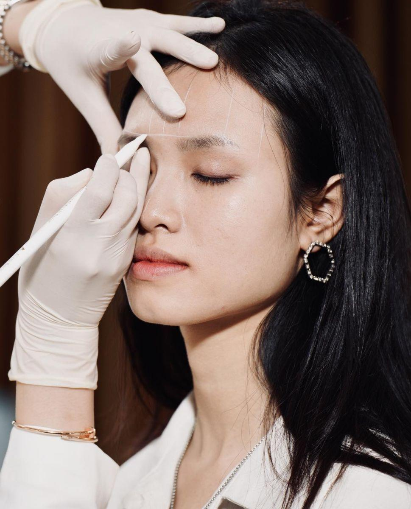
Hướng dẫn chọn dáng mày cho mặt tròn, mặt vuông, mặt dài, mặt trái xoan và các dáng khuôn mặt phổ biến.
Đọc bài tư vấnThông thường nên phun mày từ 18 tuổi trở lên; dưới 18 tuổi cần cân nhắc kỹ, còn người lớn tuổi vẫn có thể làm nếu sức khỏe phù hợp.
Đọc bài tư vấn
Phụ nữ mang thai nên trì hoãn phun mày để ưu tiên an toàn cho mẹ và bé, đồng thời chọn giải pháp trang điểm tạm thời phù hợp hơn.
Đọc bài tư vấn
Chân mày chuyển xanh xám hoặc xanh đen sau nhiều năm có thể xử lý nếu đánh giá đúng nền mực và chọn phương pháp phù hợp.
Đọc bài tư vấn
Giải thích nguyên nhân chân mày chuyển đỏ sau nhiều năm và các cách xử lý như phun phủ, khử màu hoặc laser khi cần.
Đọc bài tư vấn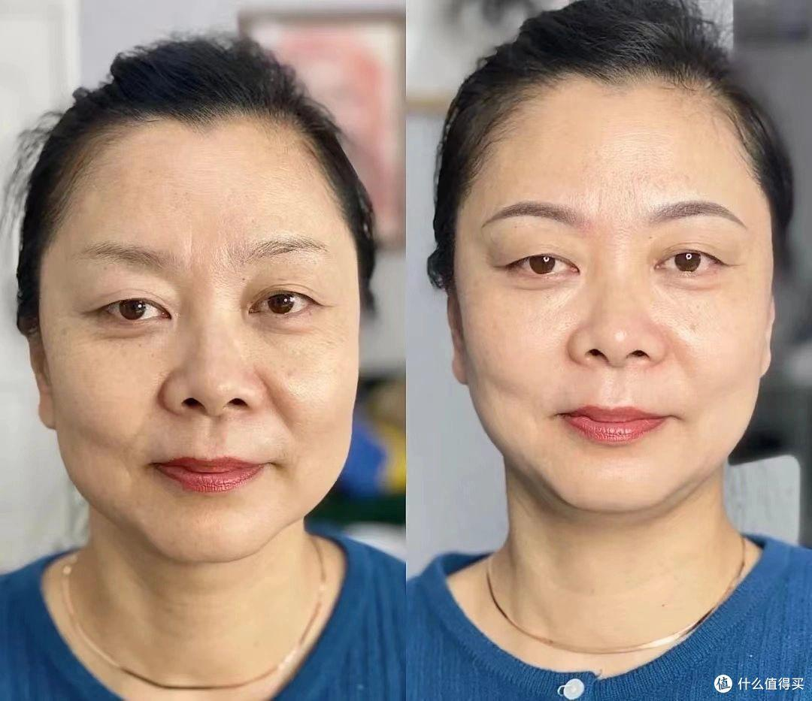
Gợi ý dáng mày cong nhẹ, ngang cong nhẹ và Ombre tự nhiên giúp gương mặt trung niên mềm, sáng và hài hòa hơn.
Đọc bài tư vấn
Giải đáp da dầu có nên phun mày không, nên chọn Nano hay Ombre và cách chăm sóc để màu lên đều, giữ lâu hơn.
Đọc bài tư vấn
Gợi ý món nên hạn chế, thực phẩm nên bổ sung và cách chăm sóc để vùng chân mày hồi phục ổn định sau phun.
Đọc bài tư vấn
Giải thích mấy ngày chân mày bắt đầu bong, màu sau bong có nhạt không và cách chăm sóc để mày lên màu đẹp.
Đọc bài tư vấn
Giải đáp thời điểm rửa mặt sau phun mày, cách vệ sinh an toàn và những điều cần tránh để màu lên đều đẹp.
Đọc bài tư vấn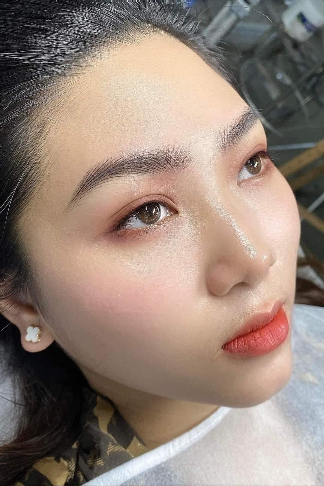
Giải thích độ bền màu theo loại da, kỹ thuật, mực phun, chăm sóc sau làm và thời điểm nên dặm lại.
Đọc bài tư vấn
Giải đáp cảm giác khi phun mày, yếu tố khiến khách thấy đau hơn và cách chăm sóc để chân mày bong đẹp.
Đọc bài tư vấn
So sánh phun mày và điêu khắc theo loại da, nền chân mày, hiệu ứng thẩm mỹ và dáng mặt để chọn đúng trước khi làm.
Đọc bài tư vấn
So sánh điêu khắc và phun mày theo hiệu ứng, loại da, độ bền, thời gian thực hiện và cách chọn đúng phương pháp.
Đọc bài tư vấn
Tìm hiểu hiệu ứng chuyển màu Ombre, ưu điểm, đối tượng phù hợp, độ bền màu và cách chăm sóc sau khi làm.
Đọc bài tư vấn
Tìm hiểu ưu nhược điểm của phun mày Nano, độ bền màu, đối tượng phù hợp và cách chọn kỹ thuật viên uy tín.
Đọc bài tư vấn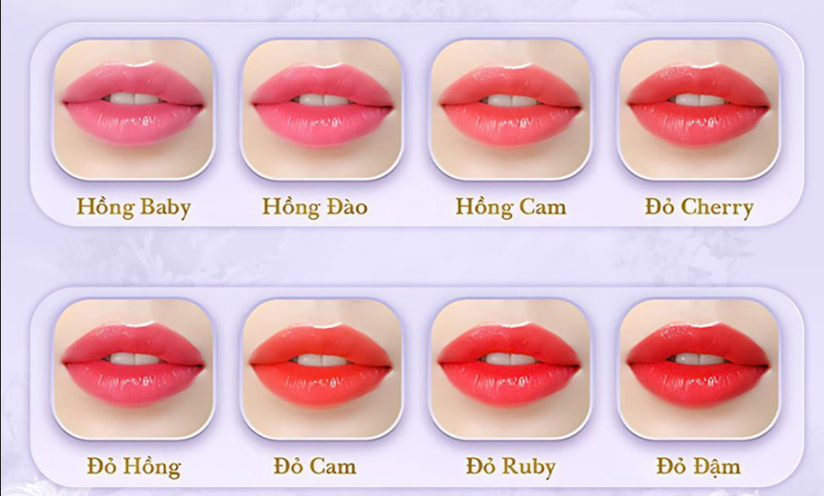
Gợi ý hồng đào, cam đào, đỏ cam, hồng đất và đỏ đất nhẹ cho khách U30 muốn môi tươi tự nhiên, dễ đi làm.
Đọc bài tư vấnTìm hiểu cảm giác khi phun môi, các yếu tố ảnh hưởng đến mức độ đau và cách giảm khó chịu sau khi làm.
Đọc bài tư vấn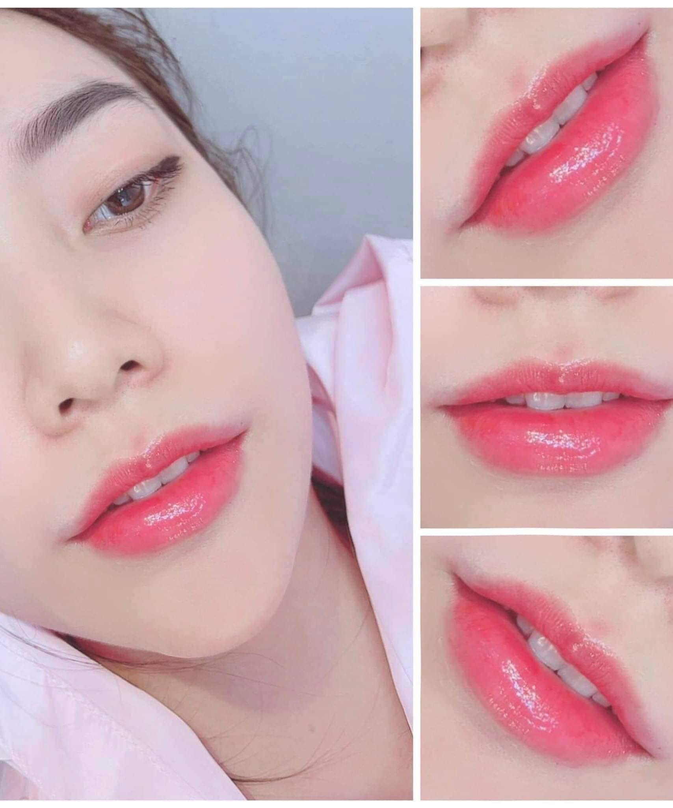
Chọn sai màu môi có thể làm da trông tối hơn, gương mặt già hơn hoặc màu không hợp phong cách.
Đọc bài tư vấn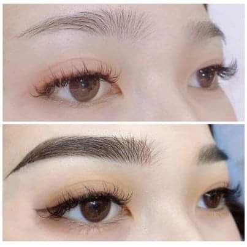
Chân mày thưa làm mặt nhạt, sáng nào cũng phải kẻ nhưng nhiều khách sợ phun xong bị đậm và cứng.
Đọc bài tư vấn
Khách thích chân mày như sợi thật nhưng không biết nền mày của mình có hợp điêu khắc hay không.
Đọc bài tư vấn
Dáng mày sai có thể làm mặt dữ, già hoặc mất cân đối dù màu mày rất đẹp.
Đọc bài tư vấn
Sau khi làm mày, khách hay lo mày bong không đều, chỗ đậm chỗ nhạt hoặc lỡ tay bóc vảy.
Đọc bài tư vấn
Mắt thiếu nét làm mặt kém tỉnh táo, nhưng khách sợ phun mí bị đậm như kẻ eyeliner.
Đọc bài tư vấn
Khách bận rộn muốn làm đẹp tại nhà nhưng lo dụng cụ, quy trình và chất lượng có đảm bảo không.
Đọc bài tư vấn
Khách sợ chọn sai dịch vụ, sai màu hoặc không biết kết quả sau bong sẽ khác thế nào.
Đọc bài tư vấn
Sau bong môi có lúc nhạt, lúc đậm làm khách lo không biết kết quả cuối cùng có đẹp không.
Đọc bài tư vấnKhách thấy màu nhạt sau bong nên lo phải làm lại ngay, nhưng dặm quá sớm có thể không phù hợp.
Đọc bài tư vấn
Khách sợ phun môi đẹp lúc đầu nhưng sau đó môi khô, xỉn hoặc nhanh nhạt màu.
Đọc bài tư vấn
Khách muốn đẹp hơn nhưng sợ làm xong bị già, dữ hoặc nhìn quá khác so với bình thường.
Đọc bài tư vấnKhách trung niên thường muốn mặt tươi hơn nhưng sợ màu quá trẻ, dáng quá sắc hoặc không hợp tuổi.
Đọc bài tư vấn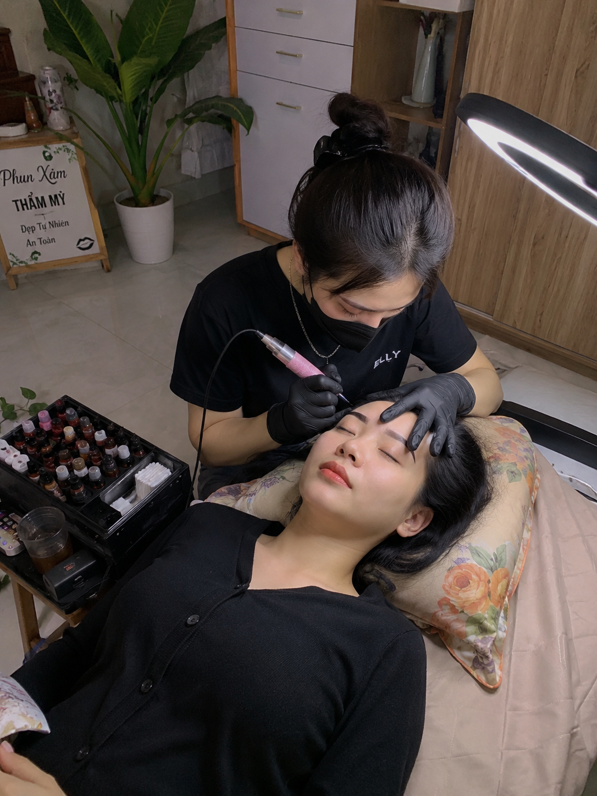
Khách đặt lịch rồi nhưng không biết trước buổi làm cần chuẩn bị ảnh, không gian hay lưu ý gì.
Đọc bài tư vấn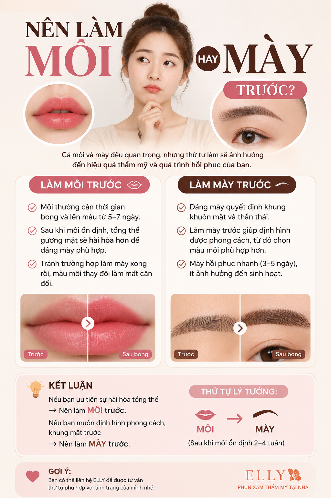
Khách muốn làm đẹp nhưng phân vân nên làm môi, mày hay mí trước để thấy thay đổi rõ nhất.
Đọc bài tư vấn